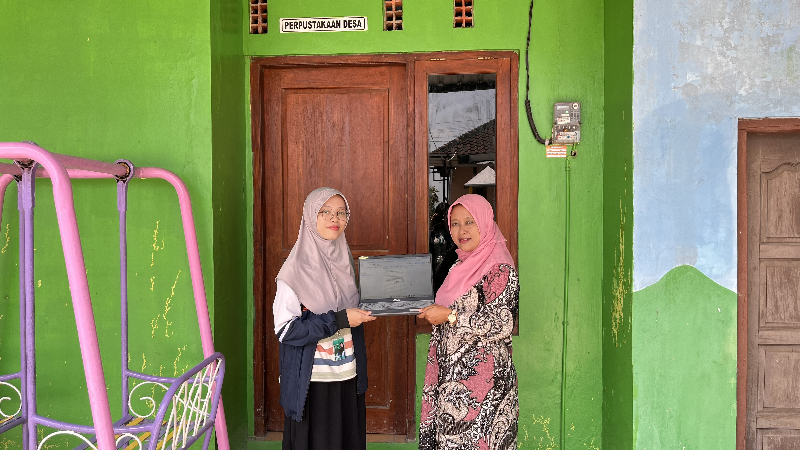

Berita Desa Sukorejo

Klaten, 6 Agustus 2026 — Mahasiswa Kuliah Kerja Nyata (KKN) Universitas Diponegoro dari Program Studi Ilmu Perpustakaan dan Informasi turut berkontribusi dalam proses pembentukan dan pengelolaan Perpustakaan Desa Sukorejo. Kegiatan ini dilaksanakan sebagai bentuk kontribusi mahasiswa dalam membantu desa mempersiapkan pengelolaan koleksi dan administrasi dasar perpustakaan agar dapat mendukung pemanfaatan perpustakaan oleh masyarakat.
Dalam kegiatan tersebut, mahasiswa membantu melakukan penataan dan pengelompokan koleksi buku berdasarkan kategori agar koleksi lebih terorganisasi dan mudah ditemukan oleh pengunjung. Selain itu, mahasiswa menyusun beberapa perangkat pendukung pengelolaan perpustakaan, yaitu dokumen inventaris buku, dokumen kartu peminjaman, dan dokumen label rak berdasarkan kategori koleksi.
Dokumen inventaris buku disusun untuk membantu pencatatan koleksi yang dimiliki perpustakaan, sedangkan kartu peminjaman disiapkan sebagai format pencatatan kegiatan peminjaman dan pengembalian buku. Sementara itu, label rak berdasarkan kategori koleksi dibuat untuk membantu mengidentifikasi dan mengarahkan penempatan buku sehingga proses pencarian koleksi dapat dilakukan dengan lebih mudah.
Seluruh dokumen hasil kegiatan tersebut diserahkan kepada pihak desa dalam bentuk digital untuk dapat digunakan dan dikembangkan sesuai kebutuhan pengelolaan Perpustakaan Desa Sukorejo. Kegiatan ini menjadi salah satu bentuk penerapan pengetahuan mahasiswa Program Studi Ilmu Perpustakaan dan Informasi dalam mendukung pengelolaan koleksi dan layanan perpustakaan di lingkungan masyarakat.
Melalui kegiatan tersebut, diharapkan Perpustakaan Desa Sukorejo memiliki dasar pengelolaan koleksi dan administrasi yang lebih tertata sehingga dapat mendukung penyelenggaraan layanan perpustakaan serta meningkatkan kemudahan masyarakat dalam menemukan dan memanfaatkan koleksi yang tersedia.